A big girl watch has entered the chat: the Tank Mini Model Louis Cartier watch. I had my eyes set on the silver model of the Panthère de Cartier but after having the pleasure of wearing the Tank LC Mini for a couple of weeks, I am torn between the two models.
This Tank Louis Cartier watch shown on the photos here is the mini model featuring a quartz movement. It comes with a yellow gold 750/1000 case, beaded crown set with a sapphire, grained silvered dial, blued-steel sword-shaped hands, mineral crystal, shiny black alligator leather strap and a yellow gold 750/1000 ardillon buckle. Its case dimensions are 24 mm x 16.5 mm with a thickness of 6.2 mm. It's water-resistant up to 3 bar (approx. 30 metres).
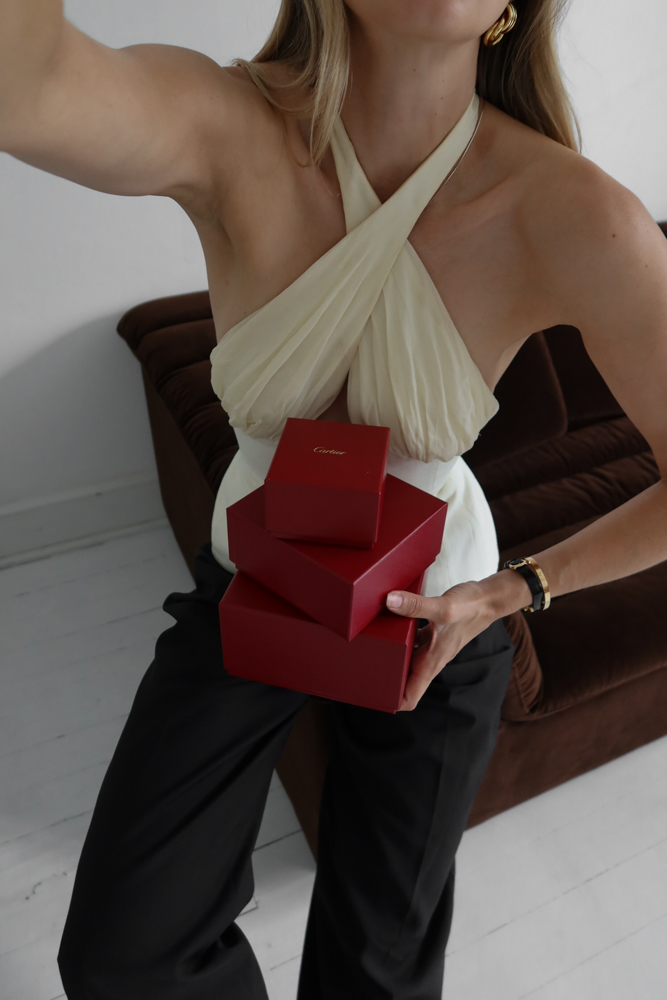
Why the Tank Mini Model Louis Cartier Watch Needs To Go On Your Wrist
Forever in love with micro-bags, the tiny fever has now also reached my love for watches. Frequently worn by Louis Cartier himself, the "Tank Louis Cartier" has launched in a mini version in September 2024 and is so perfect for smaller wrists (but I can also see it on my partner!).
Paired with Cartier's Love ring and medium Love bracelet in yellow gold, it makes for the perfect everyday stack.
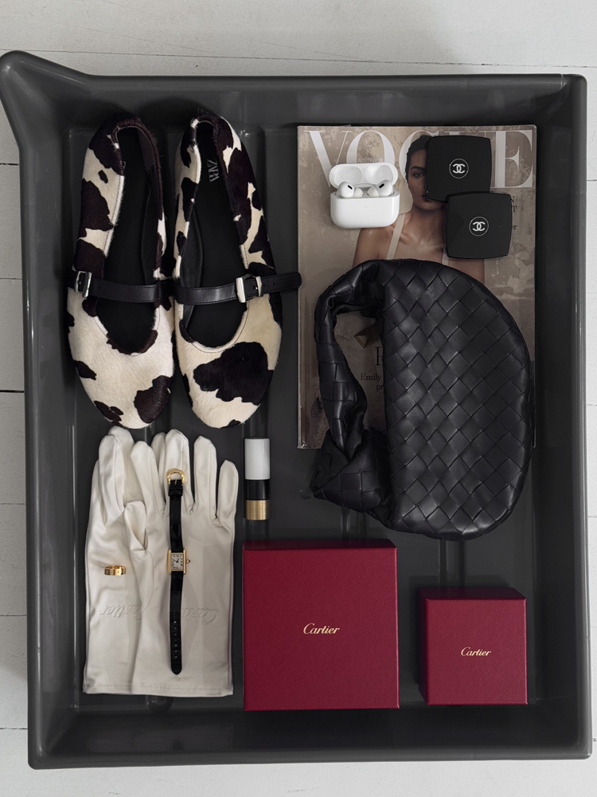
How I am styling the Cartier Tank LC Mini Watch
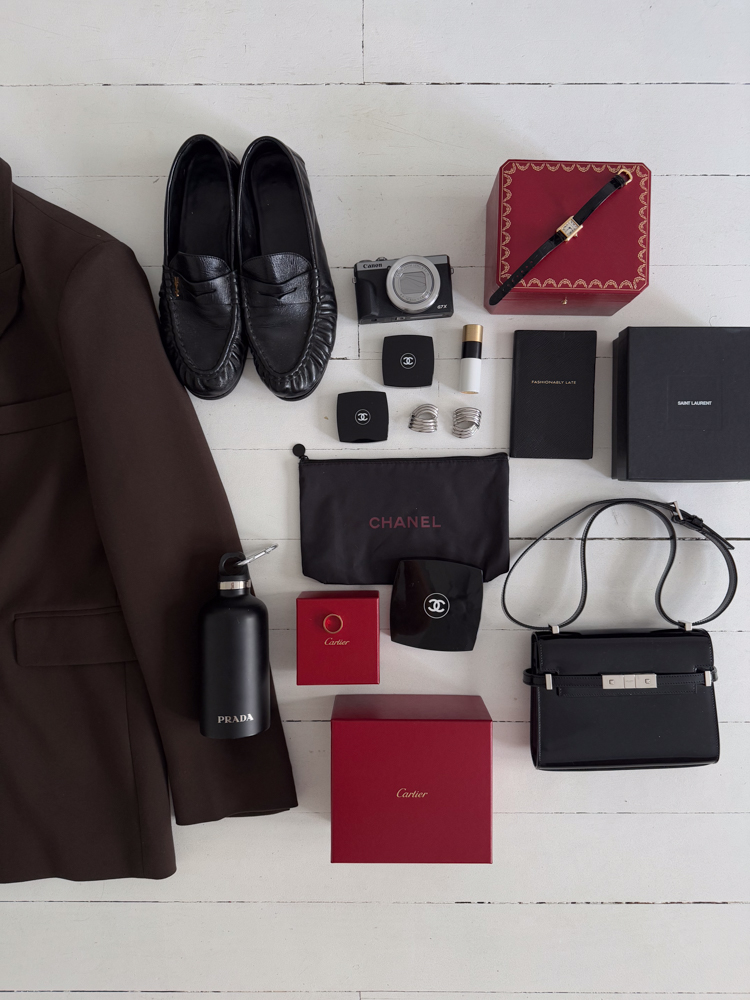
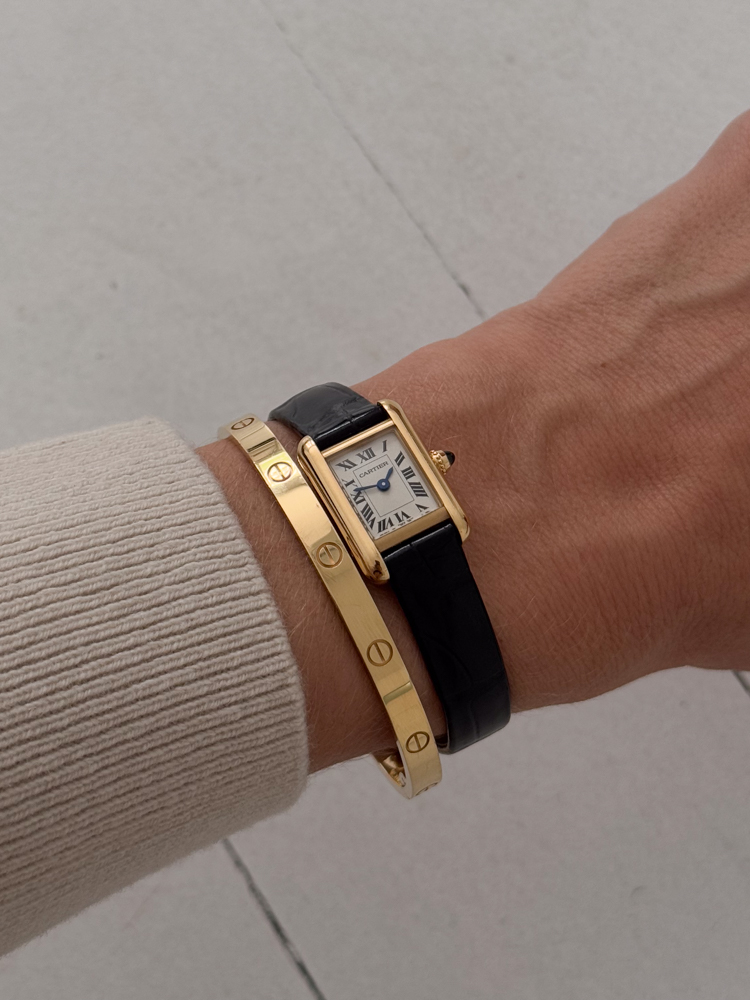
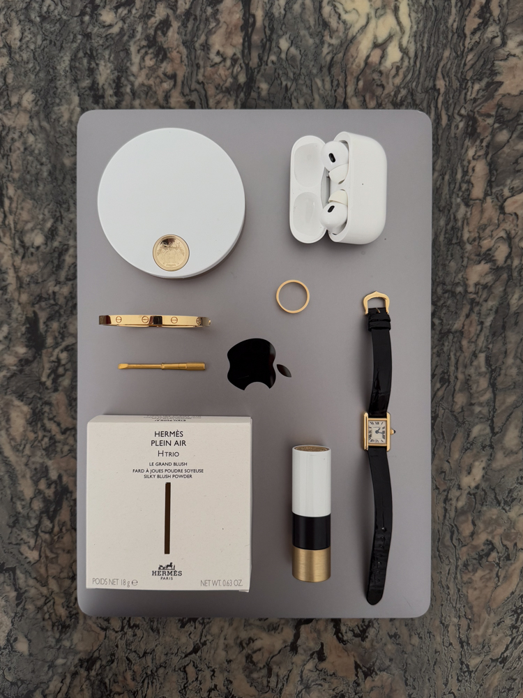
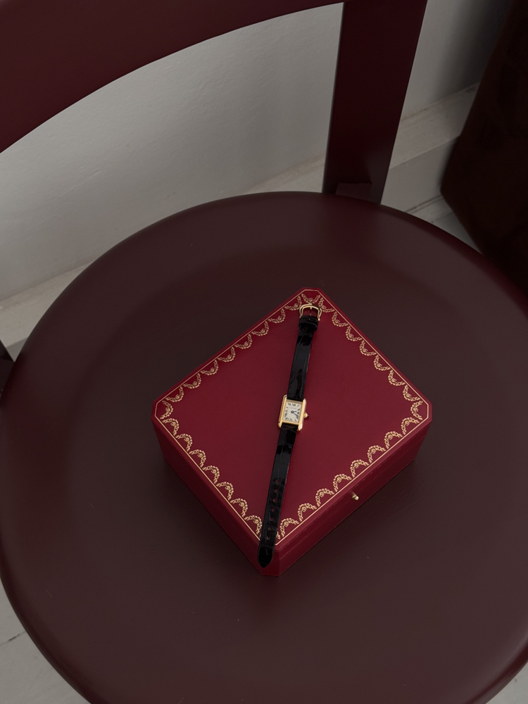
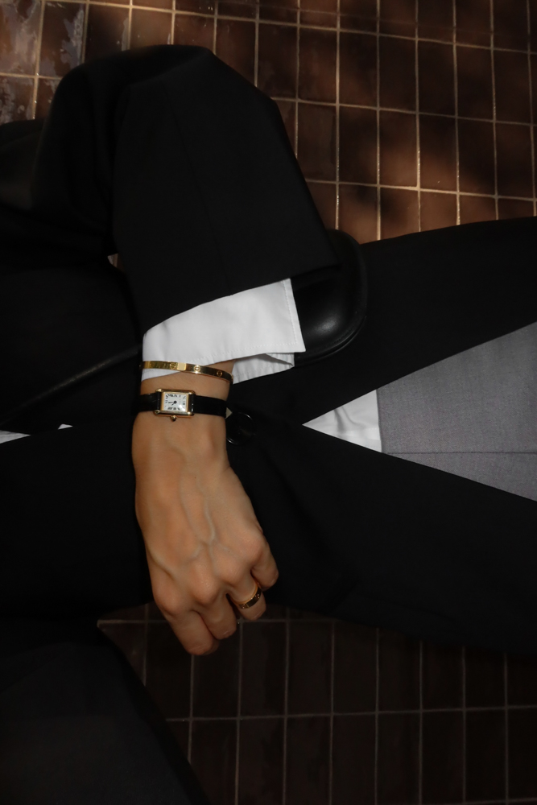
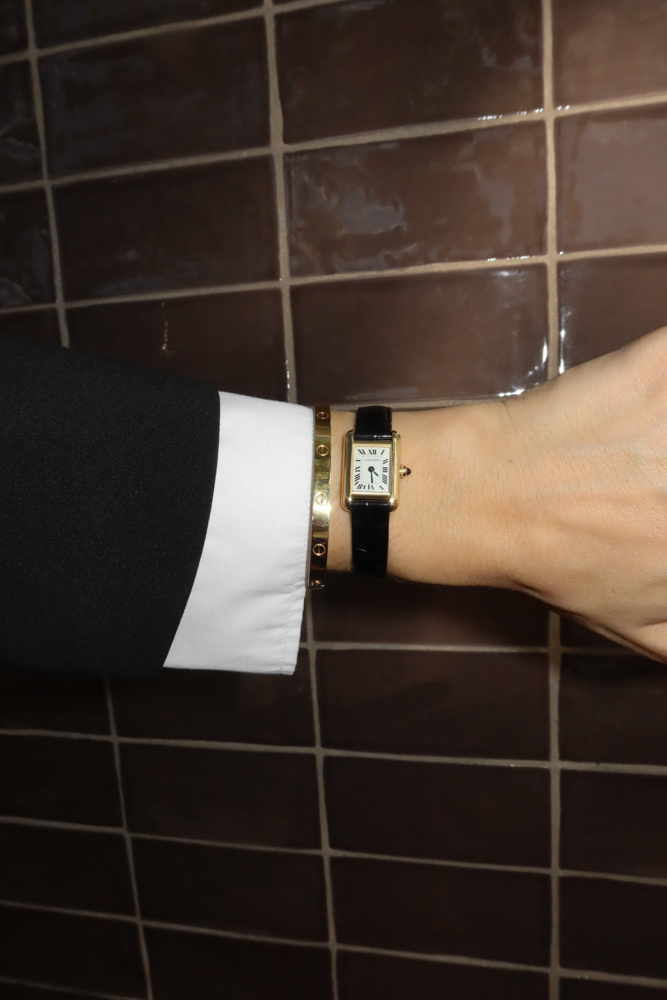
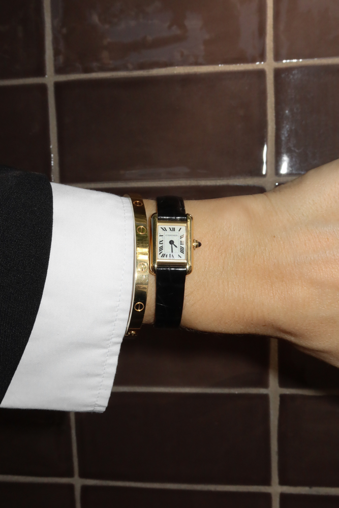
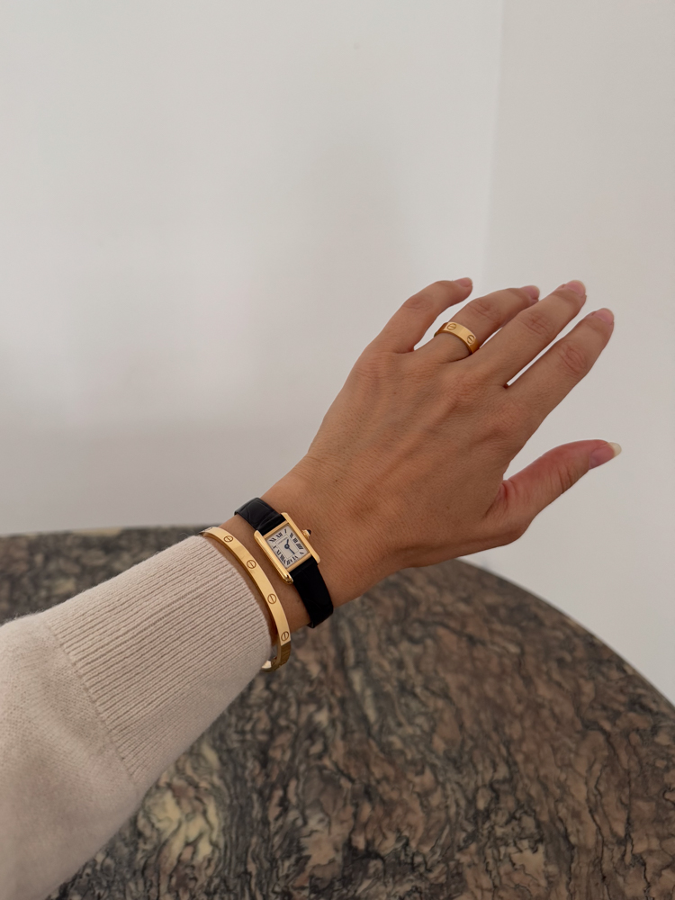
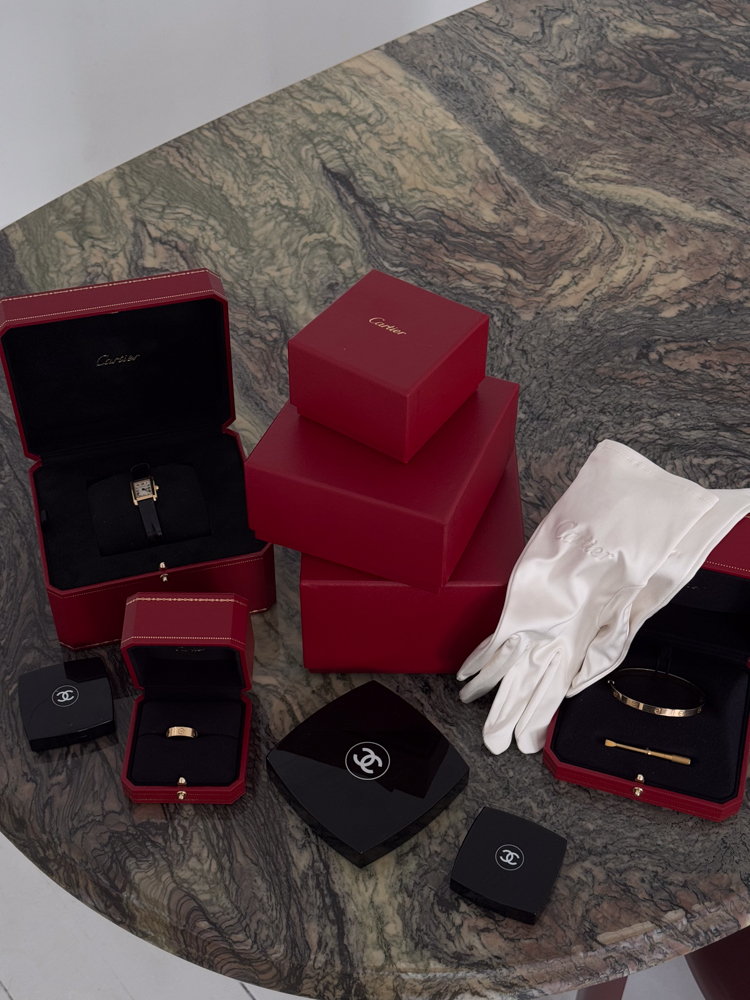
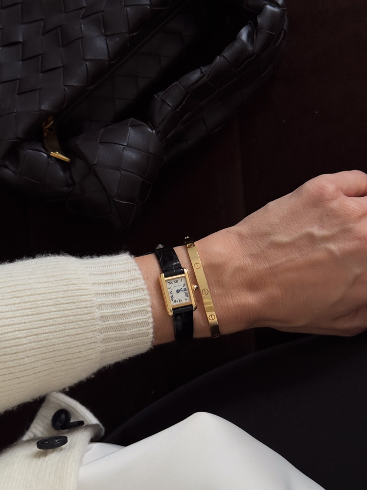